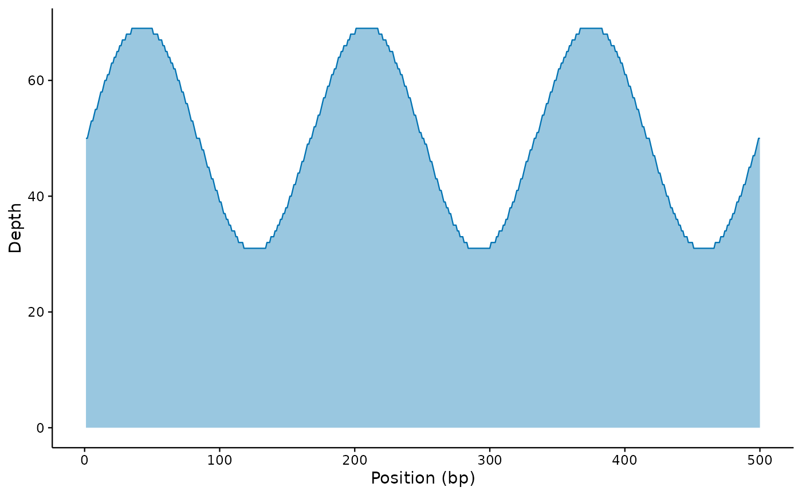

Draws sequencing-depth (coverage) tracks along a genome or contig from a
tidy data frame, a samtools depth / bedGraph / BED file, or – optionally
– a BAM/CRAM alignment. Multiple samples are overlaid by colour and
multiple contigs are faceted. Gene annotations and highlight regions can be
overlaid.
Usage
mp_coverage(
x,
format = c("auto", "depth", "bedgraph", "bed", "bam", "data.frame"),
region = NULL,
window = NULL,
contig = NULL,
sample = NULL,
plot.type = c("line", "area"),
log.y = FALSE,
annotations = NULL,
highlight = NULL,
palette = NULL,
theme = NULL,
...,
plot.title = NULL,
plot.subtitle = NULL,
plot.caption = NULL,
font.size = getOption("micropubr.font.size", 11),
return.data = FALSE,
verbose = getOption("micropubr.verbose", FALSE)
)Arguments
- x
A data frame (with position/depth columns), a path to a
samtools depth, bedGraph or BED file, or a path to a BAM/CRAM file.- format
Input format:
"auto"(guess from extension/columns),"depth","bedgraph","bed","bam"or"data.frame".- region
Optional region to restrict a BAM import, as
"contig:start-end"or"contig".- window
Optional window size (bp) for binning to mean depth – useful for whole-genome views.
- contig
Optional contig name(s) to keep.
- sample
Optional sample label (for single-sample inputs).
- plot.type
"line"or"area".- log.y
Plot depth on a log10 axis.
- annotations
Optional gene track: a data frame with
start,endand optionallystrandandlabelcolumns (andcontigfor multi-contig views).- highlight
Optional data frame of regions to shade, with
startandend(and optionalcontig).- palette, theme, plot.title, plot.subtitle, plot.caption, font.size
See
mp_alpha().- ...
Passed to the primary geom.
- return.data
If
TRUE, return the tidy coverage data frame.- verbose
Print the methods used.
Examples
cov <- data.frame(
contig = "chr1", position = 1:500,
depth = 50 + as.integer(20 * sin(seq(0, 6 * pi, length.out = 500)))
)
mp_coverage(cov, plot.type = "area")
